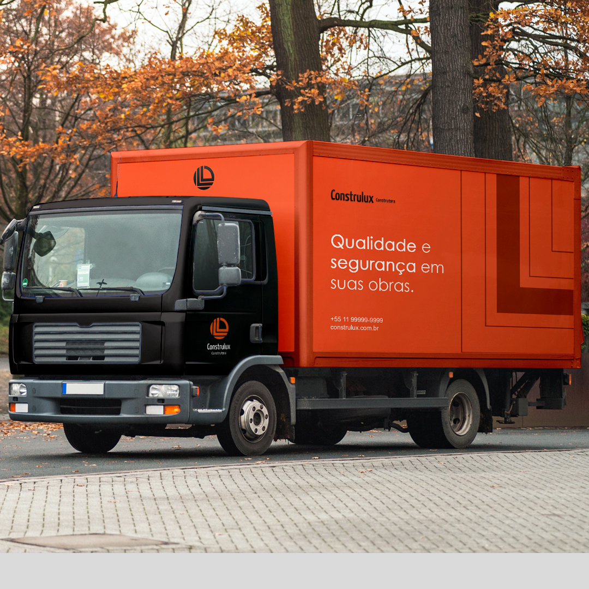
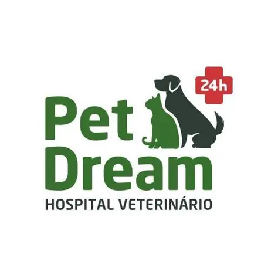
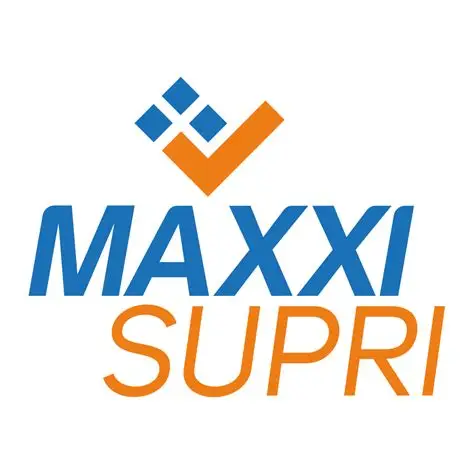

.png)
Transformamos a comunicação de marcas em algo humano, atrativo e rentável através de design contemporâneo, posicionamento editorial e produção de conteúdo audiovisual.
Comunicação humanizada, atrativa e rentável.
Investir em uma marca profissional não é despesa, é um investimento estratégico que impulsiona o sucesso a longo prazo. Unimos estética refinada, retenção de atenção em vídeo e posicionamento sólido para gerar resultados reais de negócios.
Torne-se referência no seu nicho transmitindo confiança e excelência.
Transforme seguidores em clientes através de uma comunicação assertiva e humana.
Ocupar o espaço digital com exclusividade é a melhor defesa contra a concorrência.
Reduza a barreira de venda e acelere o ciclo de compra do seu público.
Soluções de Alto Impacto (Clique em um serviço para ver a explicação detalhada)
Desenvolvimento completo da identidade visual para representar a essência e o posicionamento da marca no mercado.
Posicionamento inteligente para destacar a empresa da concorrência e atrair o público ideal.
Cortes dinâmicos para Reels e TikTok focados em retenção de atenção.
Planejamento e rotina de presença ativa e organizada nas redes sociais.
Orientação em gravações para garantir naturalidade e conexão em vídeo.
Projetos Realizados
.jpg)
.jpg)



.jpg)

Cronograma & Ferramentas (Clique em cada fase para ver o passo a passo completo)
Diagnóstico e objetivo da marca.
Definição da linha editorial.
Design de posts e validação.
Edição dinâmica e captação.
Aprovação e acompanhamento.
Trabalhamos com o ecossistema líder de mercado da Adobe e ferramentas de nível superior para garantir excelência técnica absoluta em cada entrega.
Adobe Photoshop | Canva
Adobe Illustrator
Adobe Premiere | CapCut
Trello | Notion
Preencha o formulário e enviaremos sua mensagem no WhatsApp.
.png)